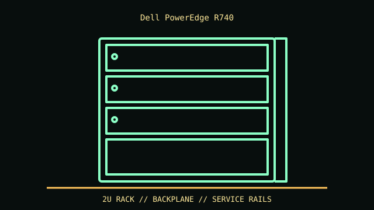

[ MODEL IDENTIFICATION // POWEREDGE R740 14TH-GEN 2U RACK SERVER ]
Dell PowerEdge R740
86.8 × 434 × 715.5 mm (H × W × D, chassis dimensions); bezel, rails and cable management add depth. Confirm rack depth and rear service clearance.

REVISION CAVEAT: R740 differs from R740xd/xd2; identify service tag, backplane, riser, bezel and PSU. Not every controller supports every drive protocol.
Specifications & fit
| Catalog subcategory | Rack server enclosures |
|---|---|
| Model / generation | PowerEdge R740 14th-gen 2U rack server |
| Dimensions / form factor / clearance | 86.8 × 434 × 715.5 mm (H × W × D, chassis dimensions); bezel, rails and cable management add depth. Confirm rack depth and rear service clearance. |
| Drive bays | Front backplane options include up to 16 × 2.5-inch or up to 8 × 3.5-inch hot-plug bays; supported SAS/SATA/NVMe depends on backplane/controller. |
| Compatibility | Dell-specific board, PSU, risers and rails. PCIe card height/length depends on chosen riser and slot position. |
| Revision identification | R740 differs from R740xd/xd2; identify service tag, backplane, riser, bezel and PSU. Not every controller supports every drive protocol. |
Compatibility & preservation notes
Dell-specific board, PSU, risers and rails. PCIe card height/length depends on chosen riser and slot position.
Use lift/2-person handling. Keep drive carriers numbered, label risers and record backplane/controller mapping before service; follow manual power precautions.
- Record the complete model/SKU, serial/date label, board and bay/backplane identifiers, accessories and manual revision before disassembly.
- For servers/workstations, match the exact riser, backplane/controller, drive carrier, PSU and rail kit; a matching 2U/4U height alone does not ensure compatibility.
- Keep original brackets, fasteners, trays, feet and front-panel parts labeled with the chassis. Do not force components into modified or incomplete specimens.
Manufacturer, archive & standards sources
- Dell Support — PowerEdge R740 manualsPrimary manufacturer or technical-reference source for this named model; use the exact SKU/document revision. Original page is gone; this is the Internet Archive’s copy.
- Dell Technologies — R740 Technical GuideAdditional manufacturer, archival, or dimensional reference. Options and specimen condition can change fit.
Approximate or convention-dependent dimensions are marked as such. Measure the individual unit for restoration, shipping and installation.